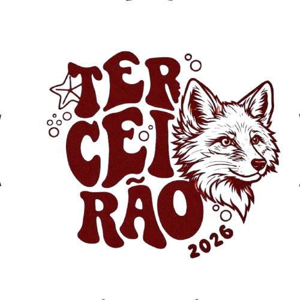

Sem rivalidade, apenas entretenimento
0

O Terceirão A é conhecido por seus memes, criatividade e engajamento nas redes sociais. Aqui reunimos os melhores momentos, desafios e vídeos que mostram nossa vida no último ano do ensino médio. Aproveite, curta e compartilhe!
Sem rivalidade, apenas entretenimento
O vídeo mais comentado da semana!
A gente não speka em ingles teacher.